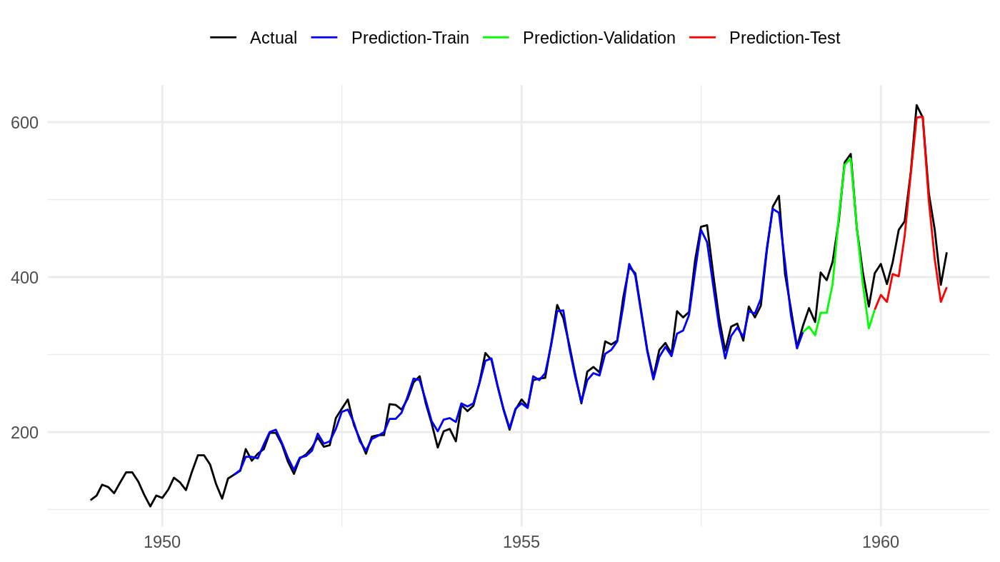

Data Generator for Time Series Models
R. Dimas Bagas Herlambang
Last updated on: January 7, 2019
Source:vignettes/timeseries.Rmd
timeseries.RmdPreparing a proper dataset for a supervised time series model in R sometimes could become very complex and tedious. There are some tutorials that already cover this kind of task: check out the tutorial made by Dancho and Keydana (2018) for basic univariate model fitting without using data generator, and the one made by Chollet and Allaire (2017) for the multivariate model with a custom data generator. However, as you could see from the articles, there are no general framework on how to properly do the data preparation process.
In this article we will show you how kerasgenerator could help us in preparing a data generator for supervised time series keras models.
Understanding the Time Series Array Shape
To fit a supervised time series model, many of keras’ functions expect the target and feature data to be in an array object with a specific number of dimension. The input array need to have three dimension that represent:
- Sample index
- Number of timesteps
- Number of distinct feature
while the output array need to have two dimension that represent:
- Sample index
- Number of distinct target
To understand better what each dimensions representing, let’s follow a quick example using the popular Internet Traffic Data from 11 European Cities dataset, provided by Time Series Data Library (Hyndman, 2019). We can download the datasets using rdatamarket package:
# import libs
library(lubridate)
library(magrittr)
library(rdatamarket)
library(tidyverse)
# import dataset
traffic_tbl <- dmlist("http://bit.ly/1W1mCQ3")
# readjust datetime
traffic_tbl %<>%
select(datetime = DateTime, traffic = Value) %>%
mutate(datetime = ymd_hms(datetime))
# quick check
glimpse(traffic_tbl)## Observations: 14,772
## Variables: 2
## $ datetime <dttm> 2005-06-07 07:00:00, 2005-06-07 07:05:00, 2005-06-07 0…
## $ traffic <dbl> 3562279127, 3710215571, 3877469703, 3876354871, 4582542…The dataset is in a general time series format–it contains a time identifier column, each row representing a data within 5-minutes interval, and it is already regularly ordered. This dataset shows a very interesting time series patterns:

The Internet Traffic dataset
In supervised time series model, we need to define two important parameters for our datasets:
-
lookback period:
The lookback period is determining how many period behind should the targets lookup for its signal, but it should be noted that the periods in-between will be ignored. For example, for target \(y_t\) and \(l\) lookback, then the target will lookup for feature \(x_{t-l}\).
-
timestep length:
This parameter define the length of a sample of feature that would be considered as a sequence of signal for the target. For example, for feature \(x_t\) and \(ts\) timesteps length, then the target will lookup for feature \(x_t, x_{t-l}, x_{t-2}, ..., x_{t-ts+1}\).
Note that the terms that I just mentioned might be differ from other source. While all the version reach to a same understanding, I really suggest you to read the original paper of Long Short-Term Memory layer (Hochreiter & Schmidhuber, 1997) and other valid resources to reach a better understanding of the terminologies.
Now let’s make some illustration using our dataset to make it clear. Supposed that we want to predict the value of 5-minutes total traffic using the hourly pattern in the same minute of previous hour. Say, we pick the last observation of our dataset as our target then the index for our target and its feature will be:
# set some parameters
lookback <- 12
timesteps <- 12
# specify the target and feature
target <- nrow(traffic_tbl)
feature_end <- target - lookback
feature_start <- feature_end - timesteps + 1
# check the values
paste("Target:", traffic_tbl$datetime[target])## [1] "Target: 2005-07-28 13:55:00"## [1] "Feature start: 2005-07-28 12:00:00"## [1] "Feature end: 2005-07-28 12:55:00"Notice that I set the feature_start to be feature_end - timesteps + 1. This is because the timesteps value is representing the length of a feature–if we don’t add + 1, the timesteps would be longer by 1 value. See the following figure for an illustration:

Supervised time series model illustration
If we follow this format, then we could convert the data into a proper array matrices like this:
# container arrays
x_array <- array(0, dim = c(1, timesteps, 1))
y_array <- array(0, dim = c(1, 1))
# specify the row indices
y_row <- target
x_row <- y_row - lookback
# adjust the x indices according to the timesteps
x_indices <- seq(x_row - timesteps + 1, x_row)
# convert the table into matrix
traffic_matrix <- data.matrix(traffic_tbl)
# fill the arrays
x_array[1, , 1] <- traffic_matrix[x_indices, 2]
y_array[1, 1] <- traffic_matrix[y_row, 2]Let’s confirm the structure and content inside the arrays:
## num [1, 1:12, 1] 6.14e+09 6.25e+09 6.29e+09 6.24e+09 6.34e+09 ...## num [1, 1] 6.61e+09Basically, the series_generator() function is transforming your data into the same format as in above explanations; forecast_generator() also works in a similar way, but have a different point of view (see forecasting section for further explanation). Let’s take a look on how those functions in action in the following sections.
Fitting a Time Series Model
To build a time series data generator, we need to specify some parameters related to our model. Let’s start by the supervised time series model specifications. In addition to lookback and timesteps, we also need to specify the x and y variables, which in this case are both "traffic" variable:
Another parameters that neet to be set are related to our cross-validation settings. In order to split the dataset into train, validation, and test dataset, the series_generator() need to know the start_index and end_index. First, let’s start by defining each sample sizes:
# number of train-val-test sample
train_size <- 12 * 24 * 7 * 4
val_size <- 12 * 24 * 7
test_size <- 12 * 24 * 7Then we can specify the sample indices according to its size. Note that you can choose to sample the row indices, but I really suggest to follow the best practice by splitting the samples according to its time order:
# train-val row indices
test_end <- nrow(traffic_tbl)
test_start <- test_end - test_size + 1
val_end <- test_start - 1
val_start <- val_end - val_size + 1
train_end <- val_start - 1
train_start <- train_end - train_size + 1The last but not least, we need to specify the batch_size and the number of steps in order to see the full data for each sample:
# batch size
batch_size <- 12 * 24
# number of steps to see full data
train_steps <- ceiling(train_size / batch_size)
val_steps <- ceiling(val_size / batch_size)
test_steps <- ceiling(test_size / batch_size)Note that I wrap the size / batch_size with ceiling function. This is necessary to ensure that Keras’ generator function will see all observation.
Before we define the data generators, let’s define a custom function for data preprocessing on the fly using recipes functions:
# import libs
library(recipes)
# recipe: square root, center, scale
recipe_obj <- recipe(traffic ~ ., traffic_tbl[train_start:train_end, ]) %>%
step_sqrt(all_outcomes()) %>%
step_center(all_outcomes()) %>%
step_scale(all_outcomes()) %>%
prep()
# custom preprocess function
prep_funs <- function(data) {
# preprocess
newdata <- bake(
object = recipe_obj,
new_data = data
)
# return the processed data
return(newdata)
}Finally, we could start to make generators for the train and validation data:
# import libs
library(kerasgenerator)
# data generator
train_gen <- series_generator(
data = traffic_tbl,
y = y,
x = x,
lookback = lookback,
timesteps = timesteps,
start_index = train_start,
end_index = train_end,
batch_size = batch_size,
return_target = TRUE,
prep_funs = prep_funs
)
val_gen <- series_generator(
data = traffic_tbl,
y = y,
x = x,
lookback = lookback,
timesteps = timesteps,
start_index = val_start,
end_index = val_end,
batch_size = batch_size,
return_target = TRUE,
prep_funs = prep_funs
)Let’s see how the generators work with Keras’ model. First, let’s define our time series Keras model:
# import libs
library(keras)
# initiate a sequential model
model <- keras_model_sequential()
# define the model
model %>%
# layer lstm
layer_lstm(
name = "lstm1",
input_shape = list(timesteps, length(x)),
units = 128,
dropout = 0.1,
recurrent_dropout = 0.2,
return_sequences = TRUE
) %>%
layer_lstm(
name = "lstm2",
units = 64,
dropout = 0.1,
recurrent_dropout = 0.2,
return_sequences = TRUE
) %>%
layer_lstm(
name = "lstm3",
units = 32,
dropout = 0.1,
recurrent_dropout = 0.2,
return_sequences = FALSE
) %>%
# layer output
layer_dense(
name = "output",
units = length(y)
)
# compile the model
model %>% compile(
optimizer = "rmsprop",
loss = "mse"
)
# model summary
summary(model)## ___________________________________________________________________________
## Layer (type) Output Shape Param #
## ===========================================================================
## lstm1 (LSTM) (None, 12, 128) 66560
## ___________________________________________________________________________
## lstm2 (LSTM) (None, 12, 64) 49408
## ___________________________________________________________________________
## lstm3 (LSTM) (None, 32) 12416
## ___________________________________________________________________________
## output (Dense) (None, 1) 33
## ===========================================================================
## Total params: 128,417
## Trainable params: 128,417
## Non-trainable params: 0
## ___________________________________________________________________________Since we use a data generator, use fit_generator() function to fit the model:
# set number of epochs
epochs <- 30
# model fitting
history <- model %>% fit_generator(
generator = train_gen,
steps_per_epoch = train_steps,
validation_data = val_gen,
validation_steps = val_steps,
epochs = epochs
)
# history plot
plot(history)
You can also pass the generator to evaluate_generator() to evaluate the results. Let’s try to evaluate on the test dataset:
# test data generator
test_gen <- series_generator(
data = traffic_tbl,
y = y,
x = x,
lookback = lookback,
timesteps = timesteps,
start_index = test_start,
end_index = test_end,
batch_size = batch_size,
return_target = TRUE,
prep_funs = prep_funs
)
# evaluate on test dataset
model %>% evaluate_generator(
generator = test_gen,
steps = test_steps
)## loss
## 0.04472111Forecasting using Data Generator
Like in series_generator() function, we need to specify some parameters for forecast_generator():
# forecast horizon
horizon <- 12
# forecast indices
last_index <- nrow(traffic_tbl)
# number of steps to see full data
fcast_steps <- ceiling(horizon / batch_size)Note that the forecast horizon should not be greater than the value of lookback if you want to forecast from the last observation.
Then, we can proceed to define the generator for forecasting and pass it to predict_generator() function.
# forecast generator
fcast_gen <- forecast_generator(
data = traffic_tbl,
x = x,
lookback = lookback,
timesteps = timesteps,
last_index = last_index,
horizon = horizon,
batch_size = batch_size,
prep_funs = prep_funs
)
# forecast using generator
fcast <- model %>% predict_generator(
generator = fcast_gen,
steps = fcast_steps
)
# check the content
str(fcast)## num [1:12, 1] 1.39 1.43 1.49 1.52 1.5 ...BONUS: you can reconvert the forecast output like this
# import libs
library(timetk)
# make future time series index
fcast_index <- tk_make_future_timeseries(
idx = traffic_tbl$datetime,
n_future = horizon
)
# get recipe values for revert back
recipe_center <- recipe_obj$steps[[2]]$means["traffic"]
recipe_scale <- recipe_obj$steps[[3]]$sds["traffic"]
# check the forecast output
fcast %>%
as.data.frame() %>%
setNames("traffic") %>%
mutate(
datetime = fcast_index,
traffic = (traffic * recipe_scale + recipe_center) ^ 2
) %>%
select(datetime, traffic) %>%
head()## datetime traffic
## 1 2005-07-28 14:00:00 6870224535
## 2 2005-07-28 14:05:00 6997586948
## 3 2005-07-28 14:10:00 7167291333
## 4 2005-07-28 14:15:00 7257118442
## 5 2005-07-28 14:20:00 7205969106
## 6 2005-07-28 14:25:00 7113351632References
Chollet, F., & Allaire, J. (2017). TensorFlow for r: Time series forecasting with recurrent neural networks. Retrieved from https://blogs.rstudio.com/tensorflow/posts/2017-12-20-time-series-forecasting-with-recurrent-neural-networks/
Dancho, M., & Keydana, S. (2018). TensorFlow for r: Predicting sunspot frequency with keras. Retrieved from https://blogs.rstudio.com/tensorflow/posts/2018-06-25-sunspots-lstm/
Hochreiter, S., & Schmidhuber, J. (1997). Long short-term memory. Neural Computation, 9(8), 1735–1780.
Hyndman, R. J. (2019). Time series data library. Retrieved from https://datamarket.com/data/list/?q=provider:tsdl